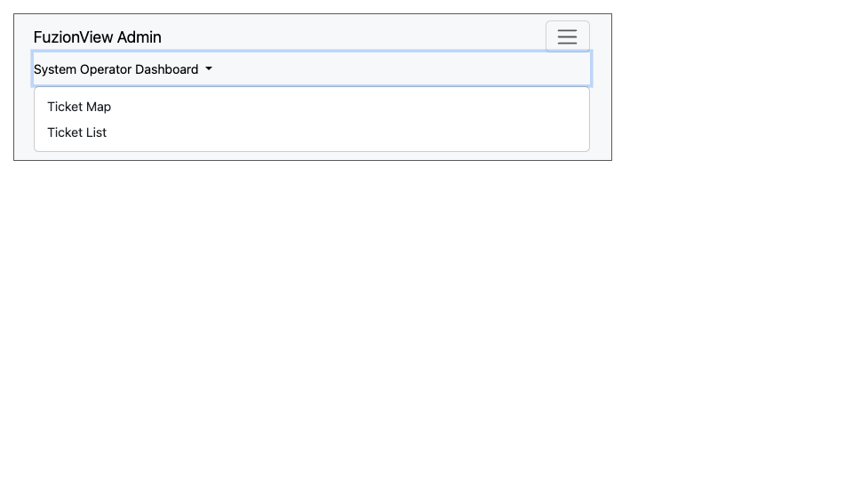
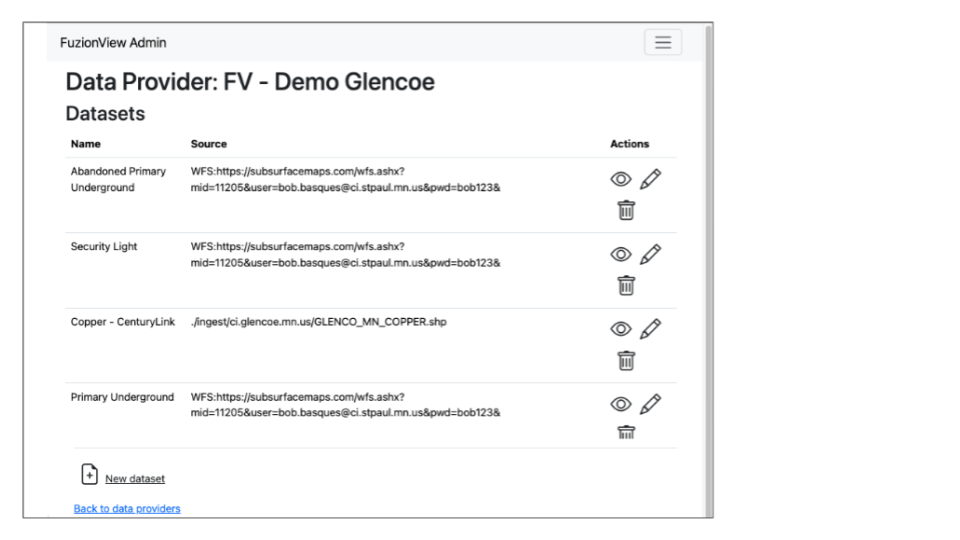

System Operator Dashboard
The System Operator Dashboard allows the system operator to view all their tickets that exist in FuzionView. Tickets can be viewed as a List or a Map.

FuzionView System Operator Dashboard PLACEHOLDER
Ticket List
Displays a list of all the tickets managed by the System Operator.

The Ticket List PLACEHOLDER
Ticket Map
Displays a map of all the tickets managed by the System Operator.

The Ticket Map PLACEHOLDER
System Operator Admin
The System Operator Admin is the FuzionView system management interface.
- Use the Admin options to manage:
Data Providers
Datasets
Users
System Settings

System Operator Admin
Data Providers
Data Providers displays a list of all the Data Providers or Facility Operators managed by the System Operator.
Add Data Provider
Select either the Plus icon or New Data Provider at the bottom of the page to add a new data provider. Enter a name and click Submit.

New Data Provider
Manage Data Providers
Hint
Click the Eye icon to view and manage the Datasets configured for a Data Provider
Click the Pencil icon to edit the name of a Data Provider
Click the Person icon to manage users for a Data Provider
Click the Trashcan icon to delete a Data Provider
Rename Data Provider
Change the name of a data provider from the Data Providers list by clicking the Pencil icon next to the provider’s information:

Edit Data Provider Name
Delete Data Provider
Warning
This cannot be undone.
PLACEHOLDER - This feature doesn’t work yet

Delete Data Provider
Datasets
Refer to the Data Provider Admin guide here

Manage Datasets
Users
Refer to the Data Provider Admin guide here

Manage Users
System Settings
Select System Settings from the System Operator menu to manage:
Feature Classes
Features Status
Ticket Types
Use the Eye icon to view and edit and the Plus icon to create these key elements.

System Settings
Feature Classes
Feature Classes are used to identify a feature category - known as a LAYER in Ticket Viewer. When a ticket has features in that layer, it will be displayed on the map in a specific color to clearly identify it. Use the Pencil icon to edit and the Trashcan icon to delete.

Feature Classes
Add New Feature Class
Scroll to the bottom and select the Plus icon or Add New Feature Class to identify a new feature class.

Add Feature Class Layers
Edit Feature Class
Select the Pencil icon to edit an existing Feature Class.

Add Feature Class Layers
Feature Statuses
Status is used to indicate whether the feature is in use and in what state of development.

Feature Statuses
Add Feature Status
You must create a Feature Status before you configure it. Scroll to the bottom and select Add New Feature Status to identify a new usage status:

Add Feature Status - Placeholder
Edit Feature Status
Click the Pencil icon next to a status edit it

Edit Feature Status
Ticket Types
The Ticket Type is used to visually indicate the urgency of a ticket, which is used in planning response time. The current options are Normal and Emergency. Emergency tickets display with the ticket number in red.

Ticket Types
Add a Ticket Type
Scroll to the bottom and select New Ticket Type to add a new level of urgency.

New Ticket Type
Edit Ticket Type
Click the Pencil icon to edit an existing Ticket Type:

Edit Ticket Type